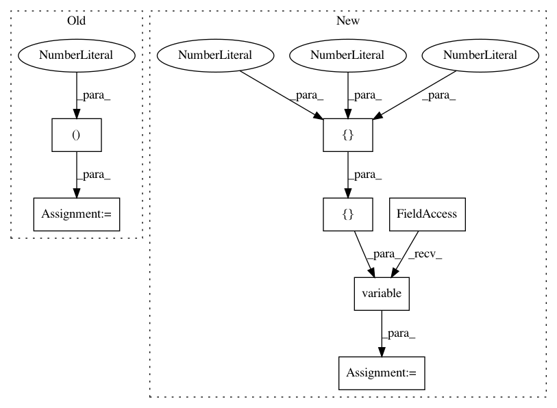

ebae4ed91a657b1eac389a6d380c165a295cd822,tests/layers/losses/test_rcnn.py,TestRCNN,test_call,#TestRCNN#,7
Before Change
def test_call(self):
classes = 3
scores = numpy.random.choice(range(classes), (2,))
target_deltas = keras.backend.ones((1, 2, 4 * classes))
target_scores = keras.utils.to_categorical(scores)
target_scores = keras.backend.expand_dims(target_scores, 0)
target_scores = keras.backend.cast(target_scores, keras.backend.floatx())
output_deltas = keras.backend.ones((1, 2, 4 * classes))
output_scores = keras.utils.to_categorical(scores)
output_scores = keras.backend.expand_dims(output_scores, 0)
output_scores = keras.backend.cast(output_scores, keras.backend.floatx())
layer = keras_rcnn.layers.RCNN()
After Change
classes = 3
target_deltas = keras.backend.ones((1, 2, 4 * classes))
target_scores = keras.backend.variable([[0, 0, 1], [0, 0, 1]])
target_scores = keras.backend.expand_dims(target_scores, 0)
target_scores = keras.backend.cast(target_scores, keras.backend.floatx())
output_deltas = keras.backend.ones((1, 2, 4 * classes))
In pattern: SUPERPATTERN
Frequency: 3
Non-data size: 7
Instances
Project Name: broadinstitute/keras-rcnn
Commit Name: ebae4ed91a657b1eac389a6d380c165a295cd822
Time: 2018-01-30
Author: allen.goodman@icloud.com
File Name: tests/layers/losses/test_rcnn.py
Class Name: TestRCNN
Method Name: test_call
Project Name: broadinstitute/keras-rcnn
Commit Name: b5f576591e59ea7ca550cd51a08f96d37eb0ebf3
Time: 2017-08-18
Author: jyhung@broadinstitute.org
File Name: tests/layers/test_losses.py
Class Name:
Method Name: test_call_classification
Project Name: broadinstitute/keras-rcnn
Commit Name: df93c4e61e7ca1db25f1ee346ac0516685498b02
Time: 2017-08-15
Author: allen.goodman@icloud.com
File Name: tests/backend/test_tensorflow_backend.py
Class Name:
Method Name: test_overlapping